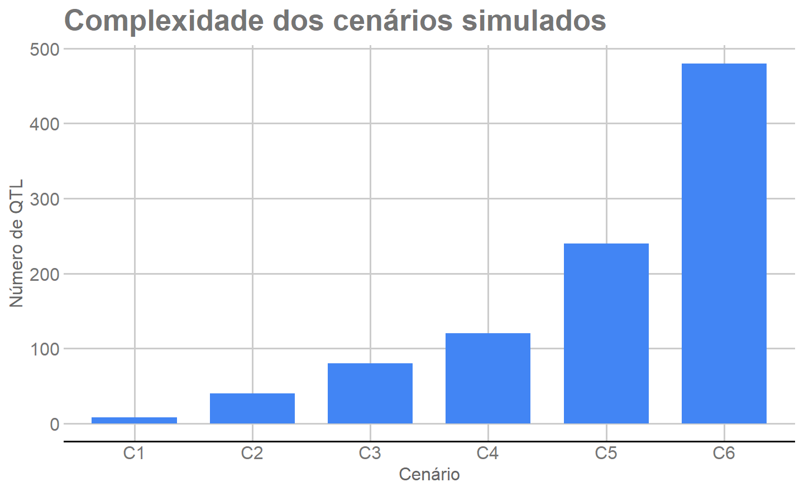

Last updated: 2026-09-09
Checks: 6 1
Knit directory:
Robustez-Predicao-Genomica-n-p/
This reproducible R Markdown analysis was created with workflowr (version 1.7.2). The Checks tab describes the reproducibility checks that were applied when the results were created. The Past versions tab lists the development history.
The R Markdown file has unstaged changes. To know which version of
the R Markdown file created these results, you’ll want to first commit
it to the Git repo. If you’re still working on the analysis, you can
ignore this warning. When you’re finished, you can run
wflow_publish to commit the R Markdown file and build the
HTML.
Great job! The global environment was empty. Objects defined in the global environment can affect the analysis in your R Markdown file in unknown ways. For reproduciblity it’s best to always run the code in an empty environment.
The command set.seed(20260908) was run prior to running
the code in the R Markdown file. Setting a seed ensures that any results
that rely on randomness, e.g. subsampling or permutations, are
reproducible.
Great job! Recording the operating system, R version, and package versions is critical for reproducibility.
Nice! There were no cached chunks for this analysis, so you can be confident that you successfully produced the results during this run.
Great job! Using relative paths to the files within your workflowr project makes it easier to run your code on other machines.
Great! You are using Git for version control. Tracking code development and connecting the code version to the results is critical for reproducibility.
The results in this page were generated with repository version eb6c91a. See the Past versions tab to see a history of the changes made to the R Markdown and HTML files.
Note that you need to be careful to ensure that all relevant files for
the analysis have been committed to Git prior to generating the results
(you can use wflow_publish or
wflow_git_commit). workflowr only checks the R Markdown
file, but you know if there are other scripts or data files that it
depends on. Below is the status of the Git repository when the results
were generated:
Ignored files:
Ignored: .Rproj.user/
Ignored: .local/
Ignored: renv/library/
Ignored: renv/staging/
Unstaged changes:
Modified: _dependencies.R
Modified: analysis/01_dados_desenho.Rmd
Modified: analysis/_site.yml
Modified: renv.lock
Note that any generated files, e.g. HTML, png, CSS, etc., are not included in this status report because it is ok for generated content to have uncommitted changes.
These are the previous versions of the repository in which changes were
made to the R Markdown (analysis/01_dados_desenho.Rmd) and
HTML (docs/01_dados_desenho.html) files. If you’ve
configured a remote Git repository (see ?wflow_git_remote),
click on the hyperlinks in the table below to view the files as they
were in that past version.
| File | Version | Author | Date | Message |
|---|---|---|---|---|
| html | 6b24a8b | WevertonGomesCosta | 2026-09-08 | Build site. |
| Rmd | 716ee8b | WevertonGomesCosta | 2026-09-08 | Implement M01 data and validation design |
| html | c8bee6d | WevertonGomesCosta | 2026-09-08 | Build site. |
| html | 73e1863 | WevertonGomesCosta | 2026-09-08 | Build site. |
| Rmd | 7307330 | WevertonGomesCosta | 2026-09-08 | Configure initial tutorial structure and simulated data |
Este é o primeiro módulo do tutorial. Antes de ajustar qualquer modelo de predição genômica, precisamos conhecer os dados e definir uma regra de comparação que seja exatamente a mesma para todos os métodos.
A primeira fase do projeto mantém os 1.000 indivíduos disponíveis e
investiga somente a redução do número de marcadores, representado por
p. Em outras palavras, queremos verificar quanto da
capacidade preditiva é preservada quando passamos de 4.010 SNPs para
painéis progressivamente menores.
Ao final desta página teremos um único objeto, salvo em
output/dados_desenho/desenho_analise.rds, contendo:
p;Esse objeto será a entrada comum dos módulos de GBLUP e aprendizado de máquina.
Os dados foram previamente simulados no software GENES para uma população F2. Uma população F2 é obtida após o cruzamento entre indivíduos da geração F1 e é frequentemente utilizada em estudos genéticos porque apresenta segregação dos alelos herdados dos genitores.
Neste conjunto existem:
Um SNP é uma posição do genoma em que os indivíduos podem apresentar diferentes variantes de DNA. Neste tutorial, os SNPs serão utilizados como preditores dos valores genéticos.
Cinco arquivos da pasta data/dados_simulados/ são
utilizados diretamente:
| Arquivo | Conteúdo |
|---|---|
DG#gen_F2_Vfen.txt |
fenótipos observados |
DG#gen_F2_Vgen.dat |
valores genéticos verdadeiros |
genoma_mapa.txt |
genótipos dos 4.010 SNPs |
genoma.txt |
mapa genético |
controlegenetico#1.dat |
parâmetros dos cenários e posições dos QTL |
A tabela identifica a função de cada arquivo antes da leitura. Os demais arquivos originais são preservados para rastreabilidade, mas não são necessários para construir o objeto analítico usado nesta primeira fase.
Primeiro indicamos onde estão os arquivos simulados. Manter esse caminho em um único objeto facilita a leitura dos arquivos seguintes sem repetir o nome da pasta.
dados_dir <- "data/dados_simulados"
stopifnot(
dir.exists(dados_dir)
)O stopifnot() interrompe a execução se a pasta não
existir. Esse tipo de verificação ajuda a identificar rapidamente
problemas de estrutura ao reproduzir o tutorial em outro computador.
O fenótipo é a característica observada em cada indivíduo. O arquivo
possui seis colunas, uma para cada cenário genético simulado. Depois da
leitura, nomeamos essas colunas como C1 até
C6.
fenotipo <- as.matrix(
read.table(
file.path(
dados_dir,
"DG#gen_F2_Vfen.txt"
),
header = FALSE
)
)
colnames(fenotipo) <- paste0(
"C",
seq_len(
ncol(fenotipo)
)
)
n_individuos <- nrow(fenotipo)
stopifnot(
n_individuos == 1000L,
ncol(fenotipo) == 6L,
!anyNA(fenotipo)
)Ao final do bloco, fenotipo é uma matriz com 1.000
linhas e seis colunas. Cada linha representa um indivíduo e cada coluna
representa uma característica simulada.
Como os dados são simulados, conhecemos também o valor genético verdadeiro de cada indivíduo. Essa informação é muito útil para avaliar as predições, mas não pode ser usada para treinar os modelos ou selecionar marcadores.
valor_genetico <- as.matrix(
read.table(
file.path(
dados_dir,
"DG#gen_F2_Vgen.dat"
),
header = FALSE
)
)
colnames(valor_genetico) <- colnames(fenotipo)
stopifnot(
identical(
dim(fenotipo),
dim(valor_genetico)
),
!anyNA(valor_genetico)
)As matrizes fenotipo e valor_genetico
possuem exatamente a mesma dimensão. Isso garante que cada valor
genético verdadeiro possa ser associado ao indivíduo e à característica
correspondentes.
O arquivo genotípico contém os estados 0, 1
e 2 para os 4.010 SNPs dos 1.000 indivíduos. Como o arquivo
é armazenado de forma linear, primeiro lemos todos os valores e depois
reconstruímos a matriz de indivíduos por marcadores.
n_marcadores <- 4010L
valores_genotipos <- scan(
file.path(
dados_dir,
"genoma_mapa.txt"
),
what = integer(),
quiet = TRUE
)
stopifnot(
length(valores_genotipos) ==
n_marcadores * n_individuos
)
genotipo_012 <- matrix(
valores_genotipos,
nrow = n_marcadores,
ncol = n_individuos,
byrow = TRUE
)
genotipo_012 <- t(genotipo_012)
stopifnot(
identical(
dim(genotipo_012),
c(1000L, 4010L)
),
identical(
sort(
unique(
as.vector(genotipo_012)
)
),
0:2
)
)A matriz genotipo_012 possui 1.000 linhas e 4.010
colunas. Portanto, cada linha representa um indivíduo e cada coluna
representa um SNP.
Para a modelagem, recodificamos 0, 1 e
2 como -1, 0 e 1.
Essa transformação apenas muda a escala numérica usada para representar
os três genótipos; ela não altera quais indivíduos pertencem a cada
classe genotípica.
Também criamos nomes padronizados para indivíduos e marcadores.
genotipo <- genotipo_012 - 1L
ids <- seq_len(n_individuos)
id_individuo <- sprintf(
"ID%04d",
ids
)
id_marcador <- paste0(
"M",
seq_len(n_marcadores)
)
rownames(fenotipo) <- id_individuo
rownames(valor_genetico) <- id_individuo
rownames(genotipo) <- id_individuo
colnames(genotipo) <- id_marcador
rm(
valores_genotipos,
genotipo_012
)
invisible(
gc()
)Depois dessa etapa, os genótipos estão prontos para os modelos e todos os objetos utilizam os mesmos identificadores de indivíduos.
Agora reunimos as dimensões dos três objetos centrais. Essa tabela é uma conferência rápida antes de avançarmos para o mapa e o desenho experimental.
resumo_dados <- data.frame(
Objeto = c(
"Fenótipos",
"Valores genéticos verdadeiros",
"Genótipos"
),
Individuos = c(
nrow(fenotipo),
nrow(valor_genetico),
nrow(genotipo)
),
Colunas = c(
ncol(fenotipo),
ncol(valor_genetico),
ncol(genotipo)
),
Uso = c(
"Resposta utilizada no treinamento",
"Avaliação preditiva após a predição",
"Preditores genômicos"
)
)
kableExtra::kbl(
resumo_dados,
caption = "Estrutura dos principais objetos analíticos",
align = c(
"l",
"r",
"r",
"l"
)
) |>
kableExtra::kable_styling(
bootstrap_options = c(
"striped",
"hover",
"condensed",
"responsive"
),
full_width = FALSE
)| Objeto | Individuos | Colunas | Uso |
|---|---|---|---|
| Fenótipos | 1000 | 6 | Resposta utilizada no treinamento |
| Valores genéticos verdadeiros | 1000 | 6 | Avaliação preditiva após a predição |
| Genótipos | 1000 | 4010 | Preditores genômicos |
Os fenótipos e os valores genéticos verdadeiros possuem seis colunas, enquanto a matriz genotípica possui 4.010. O valor genético verdadeiro será reservado exclusivamente para avaliar as predições produzidas nos indivíduos de teste.
Um grupo de ligação representa um conjunto de marcadores pertencentes ao mesmo segmento cromossômico simulado. O mapa informa a ordem e a posição dos SNPs em cada um desses grupos.
O arquivo genoma.txt possui informações adicionais nas
primeiras linhas. Por isso usamos skip = 12 para começar a
leitura diretamente na parte que contém os marcadores.
mapa_bruto <- read.table(
file.path(
dados_dir,
"genoma.txt"
),
header = FALSE,
sep = ",",
skip = 12,
fill = TRUE,
strip.white = TRUE,
fileEncoding = "latin1",
stringsAsFactors = FALSE
)
mapa_bruto <- mapa_bruto[
,
1:5
]
mapa <- data.frame(
marcador = seq_len(
nrow(mapa_bruto)
),
id_marcador = paste0(
"M",
seq_len(
nrow(mapa_bruto)
)
),
LG = as.integer(
mapa_bruto[
,
1
]
),
marcador_no_LG = as.integer(
mapa_bruto[
,
2
]
),
posicao_cM = as.numeric(
mapa_bruto[
,
5
]
),
stringsAsFactors = FALSE
)
stopifnot(
nrow(mapa) == n_marcadores,
identical(
sort(
unique(mapa$LG)
),
1:10
),
all(
table(mapa$LG) == 401L
)
)A leitura confirma 4.010 marcadores distribuídos entre dez grupos de ligação.
Para deixar o código transparente, percorremos os dez grupos de
ligação com um for. Em cada grupo contamos os SNPs e
registramos as posições inicial, final e o espaçamento entre
marcadores.
resumo_mapa <- data.frame(
LG = 1:10,
Marcadores = integer(10),
Inicio_cM = numeric(10),
Fim_cM = numeric(10),
Espacamento_cM = numeric(10)
)
for (lg in 1:10) {
mapa_lg <- mapa[
mapa$LG == lg,
,
drop = FALSE
]
resumo_mapa$Marcadores[lg] <- nrow(mapa_lg)
resumo_mapa$Inicio_cM[lg] <- min(mapa_lg$posicao_cM)
resumo_mapa$Fim_cM[lg] <- max(mapa_lg$posicao_cM)
resumo_mapa$Espacamento_cM[lg] <-
unique(
diff(
mapa_lg$posicao_cM
)
)[1]
}
kableExtra::kbl(
resumo_mapa,
caption = "Estrutura do mapa genético por grupo de ligação",
digits = 1
) |>
kableExtra::kable_styling(
bootstrap_options = c(
"striped",
"hover",
"condensed",
"responsive"
),
full_width = FALSE
)| LG | Marcadores | Inicio_cM | Fim_cM | Espacamento_cM |
|---|---|---|---|---|
| 1 | 401 | 0 | 200 | 0.5 |
| 2 | 401 | 0 | 200 | 0.5 |
| 3 | 401 | 0 | 200 | 0.5 |
| 4 | 401 | 0 | 200 | 0.5 |
| 5 | 401 | 0 | 200 | 0.5 |
| 6 | 401 | 0 | 200 | 0.5 |
| 7 | 401 | 0 | 200 | 0.5 |
| 8 | 401 | 0 | 200 | 0.5 |
| 9 | 401 | 0 | 200 | 0.5 |
| 10 | 401 | 0 | 200 | 0.5 |
Todos os grupos possuem 401 SNPs distribuídos de 0 a 200 cM, com espaçamento de 0,5 cM. A distribuição regular é uma característica do esquema de simulação usado para gerar esses dados.
Um QTL (quantitative trait locus) é uma região do genoma que contribui para a variação de uma característica quantitativa. Os seis cenários simulados diferem principalmente no número de QTL e na herdabilidade.
A herdabilidade, representada por \(h^2\), descreve a proporção da variação fenotípica associada à variação genética no cenário simulado.
O arquivo de controle é organizado em seis blocos, um para cada característica. Primeiro lemos todas as linhas e identificamos onde cada bloco começa.
controle_linhas <- readLines(
file.path(
dados_dir,
"controlegenetico#1.dat"
),
warn = FALSE,
encoding = "latin1"
)
inicio_blocos <- grep(
"^Variavel",
controle_linhas
)
stopifnot(
length(inicio_blocos) == 6L
)As seis posições encontradas em inicio_blocos indicam
onde começam as informações de C1 até C6.
Para um tutorial, é mais útil enxergar explicitamente como cada campo
é extraído. Por isso percorremos os seis blocos com um for,
sem criar uma função auxiliar para esconder a leitura das linhas.
n_cenarios <- length(inicio_blocos)
controle_cenarios <- data.frame(
cenario = paste0(
"C",
seq_len(n_cenarios)
),
variavel = integer(n_cenarios),
total_loci = integer(n_cenarios),
n_qtl = integer(n_cenarios),
gmd = numeric(n_cenarios),
modelo = integer(n_cenarios),
h2 = numeric(n_cenarios),
constante = numeric(n_cenarios),
escala = numeric(n_cenarios),
CV = numeric(n_cenarios),
stringsAsFactors = FALSE
)
qtl_por_cenario <- vector(
"list",
n_cenarios
)
names(qtl_por_cenario) <- controle_cenarios$cenario
for (i in seq_len(n_cenarios)) {
inicio <- inicio_blocos[i]
partes <- strsplit(
controle_linhas[inicio],
",",
fixed = TRUE
)[[1]]
controle_cenarios$variavel[i] <-
as.integer(
trimws(
partes[
length(partes)
]
)
)
partes <- strsplit(
controle_linhas[inicio + 1L],
",",
fixed = TRUE
)[[1]]
controle_cenarios$total_loci[i] <-
as.integer(
trimws(
partes[
length(partes)
]
)
)
partes <- strsplit(
controle_linhas[inicio + 2L],
",",
fixed = TRUE
)[[1]]
controle_cenarios$n_qtl[i] <-
as.integer(
trimws(
partes[
length(partes)
]
)
)
qtl_por_cenario[[i]] <- scan(
text = controle_linhas[
inicio + 3L
],
what = integer(),
quiet = TRUE
)
partes <- strsplit(
controle_linhas[inicio + 5L],
",",
fixed = TRUE
)[[1]]
controle_cenarios$gmd[i] <-
as.numeric(
trimws(
partes[
length(partes)
]
)
)
partes <- strsplit(
controle_linhas[inicio + 6L],
",",
fixed = TRUE
)[[1]]
controle_cenarios$modelo[i] <-
as.integer(
trimws(
partes[
length(partes)
]
)
)
partes <- strsplit(
controle_linhas[inicio + 7L],
",",
fixed = TRUE
)[[1]]
controle_cenarios$h2[i] <-
as.numeric(
trimws(
partes[
length(partes)
]
)
)
partes <- strsplit(
controle_linhas[inicio + 8L],
",",
fixed = TRUE
)[[1]]
controle_cenarios$constante[i] <-
as.numeric(
trimws(
partes[
length(partes)
]
)
)
partes <- strsplit(
controle_linhas[inicio + 9L],
",",
fixed = TRUE
)[[1]]
controle_cenarios$escala[i] <-
as.numeric(
trimws(
partes[
length(partes)
]
)
)
partes <- strsplit(
controle_linhas[inicio + 10L],
",",
fixed = TRUE
)[[1]]
controle_cenarios$CV[i] <-
as.numeric(
trimws(
partes[
length(partes)
]
)
)
}
stopifnot(
all(
controle_cenarios$total_loci == 4010L
),
all(
controle_cenarios$n_qtl ==
lengths(qtl_por_cenario)
),
all(
unlist(qtl_por_cenario) %in%
seq_len(n_marcadores)
)
)O objeto controle_cenarios agora possui uma linha para
cada cenário. A lista qtl_por_cenario guarda as posições
verdadeiras dos QTL e será preservada somente para avaliações
posteriores.
A tabela abaixo reúne as informações necessárias para interpretar os cenários genéticos antes de comparar os métodos de predição.
tabela_cenarios <- controle_cenarios[
,
c(
"cenario",
"n_qtl",
"h2"
)
]
kableExtra::kbl(
tabela_cenarios,
caption = "Arquitetura genética dos seis cenários simulados",
digits = 2,
col.names = c(
"Cenário",
"Número de QTL",
"Herdabilidade (h²)"
)
) |>
kableExtra::kable_styling(
bootstrap_options = c(
"striped",
"hover",
"condensed",
"responsive"
),
full_width = FALSE
)| Cenário | Número de QTL | Herdabilidade (h²) |
|---|---|---|
| C1 | 8 | 0.7 |
| C2 | 40 | 0.7 |
| C3 | 80 | 0.5 |
| C4 | 120 | 0.5 |
| C5 | 240 | 0.3 |
| C6 | 480 | 0.3 |
C1 e C2 compartilham \(h^2=0{,}7\), C3 e C4 compartilham \(h^2=0{,}5\), e C5 e C6 compartilham \(h^2=0{,}3\). Dentro de cada par, o segundo cenário possui mais QTL. Essa organização permite descrever como os métodos se comportam em arquiteturas com diferentes números de QTL e herdabilidades, sem tratar o desenho como um fatorial completo.
A quantidade de QTL também pode ser visualizada diretamente. A figura utiliza a paleta GDocs definida como padrão visual deste tutorial.
if (!requireNamespace(
"ggplot2",
quietly = TRUE
)) {
stop(
"Instale o pacote ggplot2 para gerar as figuras do tutorial."
)
}
if (!requireNamespace(
"ggthemes",
quietly = TRUE
)) {
stop(
"Instale o pacote ggthemes para usar o padrão gráfico GDocs."
)
}
figura_qtl <- ggplot2::ggplot(
controle_cenarios,
ggplot2::aes(
x = cenario,
y = n_qtl
)
) +
ggplot2::geom_col(
fill = ggthemes::gdocs_pal()(1),
width = 0.72
) +
ggplot2::labs(
title = "Complexidade dos cenários simulados",
x = "Cenário",
y = "Número de QTL"
) +
ggthemes::theme_gdocs(
base_size = 12
) +
ggplot2::theme(
plot.title = ggplot2::element_text(
face = "bold"
)
)
figura_qtl
Número de QTL em cada cenário genético simulado.
A figura evidencia o aumento progressivo do número de QTL entre C1 e C6. Esse aumento não deve ser interpretado isoladamente como efeito causal da poligenicidade, porque a herdabilidade também varia entre grupos de cenários.
Nesta primeira fase, o número de indivíduos permanece fixo em
\[ n=1000. \]
A dimensão modificada é apenas o número de SNPs, representado por
p.
O painel completo com 4.010 marcadores é a referência. Depois, cada método construirá seu próprio ranking de importância e utilizará os primeiros SNPs desse ranking para formar painéis progressivamente menores.
pA regra utilizada é a mesma para todos os métodos. Para transformar cada proporção em um número inteiro de SNPs usamos arredondamento half-up:
\[ p_q=\lfloor 4010q+0{,}5\rfloor, \]
em que \(q\) é a proporção de marcadores mantida.
proporcoes_p <- c(
1,
0.50,
0.25,
0.10,
0.05,
0.01
)
niveis_p <- data.frame(
proporcao = proporcoes_p,
percentual = paste0(
proporcoes_p * 100,
"%"
),
n_marcadores = floor(
n_marcadores *
proporcoes_p +
0.5
),
stringsAsFactors = FALSE
)
stopifnot(
identical(
niveis_p$n_marcadores,
c(
4010,
2005,
1003,
401,
201,
40
)
)
)
kableExtra::kbl(
niveis_p,
caption = "Níveis de redução do número de marcadores",
col.names = c(
"Proporção",
"Percentual",
"Número de SNPs"
)
) |>
kableExtra::kable_styling(
bootstrap_options = c(
"striped",
"hover",
"condensed",
"responsive"
),
full_width = FALSE
)| Proporção | Percentual | Número de SNPs |
|---|---|---|
| 1.00 | 100% | 4010 |
| 0.50 | 50% | 2005 |
| 0.25 | 25% | 1003 |
| 0.10 | 10% | 401 |
| 0.05 | 5% | 201 |
| 0.01 | 1% | 40 |
A redução mais moderada mantém 2.005 dos 4.010 SNPs, enquanto a condição mais extrema mantém apenas 40. Esses mesmos seis tamanhos serão usados para todos os métodos.
O M01 ainda não seleciona SNPs. A seleção ocorrerá dentro de cada método, cenário e fold. Uma vez obtido o ranking, os painéis serão aninhados:
\[ P_{1\%} \subset P_{5\%} \subset P_{10\%} \subset P_{25\%} \subset P_{50\%} \subset P_{100\%}. \]
Isso significa, por exemplo, que os 40 SNPs do painel de 1% também estarão presentes nos painéis de 5%, 10%, 25%, 50% e 100%.
Para comparar os métodos de forma justa, todos devem prever exatamente os mesmos indivíduos. Utilizamos validação cruzada com cinco folds.
Um fold é uma parte dos dados reservada temporariamente para teste. Em cada rodada:
Ao final das cinco rodadas, todos os 1.000 indivíduos participaram uma vez do teste.
A separação depende somente dos identificadores dos indivíduos e de uma semente fixa. Fenótipos, valores genéticos, genótipos e posições dos QTL não participam do sorteio.
SEED_DESENHO <- 20260908L
N_FOLDS <- 5L
set.seed(SEED_DESENHO)
ordem_individuos <- sample(
ids,
size = length(ids),
replace = FALSE
)
fold_na_ordem <- rep(
seq_len(N_FOLDS),
length.out = n_individuos
)
fold_individuo <- integer(
n_individuos
)
fold_individuo[
ordem_individuos
] <- fold_na_ordem
atribuicao_folds <- data.frame(
id = ids,
individuo = id_individuo,
fold = fold_individuo,
stringsAsFactors = FALSE
)
folds <- vector(
"list",
N_FOLDS
)
names(folds) <- paste0(
"Fold",
seq_len(N_FOLDS)
)
for (k in seq_len(N_FOLDS)) {
folds[[k]] <- list(
fold = k,
treino = ids[
fold_individuo != k
],
teste = ids[
fold_individuo == k
]
)
}A semente fixa torna a divisão reproduzível. Qualquer pessoa que execute esse bloco com os mesmos dados obterá os mesmos indivíduos em cada fold.
Antes de usar os folds, verificamos se cada partição possui 800 indivíduos no treinamento, 200 no teste e nenhuma sobreposição entre esses dois conjuntos.
tamanho_treino <- integer(
N_FOLDS
)
tamanho_teste <- integer(
N_FOLDS
)
sobreposicao <- integer(
N_FOLDS
)
for (k in seq_len(N_FOLDS)) {
tamanho_treino[k] <-
length(
folds[[k]]$treino
)
tamanho_teste[k] <-
length(
folds[[k]]$teste
)
sobreposicao[k] <-
length(
intersect(
folds[[k]]$treino,
folds[[k]]$teste
)
)
}
stopifnot(
all(
table(
atribuicao_folds$fold
) == 200L
),
all(
tamanho_treino == 800L
),
all(
tamanho_teste == 200L
),
all(
sobreposicao == 0L
)
)
resumo_folds <- data.frame(
Fold = seq_len(N_FOLDS),
Treinamento = tamanho_treino,
Teste = tamanho_teste,
Sobreposicao = sobreposicao
)
kableExtra::kbl(
resumo_folds,
caption = "Tamanho dos conjuntos de treinamento e teste",
col.names = c(
"Fold",
"Treinamento",
"Teste",
"Sobreposição"
)
) |>
kableExtra::kable_styling(
bootstrap_options = c(
"striped",
"hover",
"condensed",
"responsive"
),
full_width = FALSE
)| Fold | Treinamento | Teste | Sobreposição |
|---|---|---|---|
| 1 | 800 | 200 | 0 |
| 2 | 800 | 200 | 0 |
| 3 | 800 | 200 | 0 |
| 4 | 800 | 200 | 0 |
| 5 | 800 | 200 | 0 |
Os cinco folds possuem exatamente a mesma dimensão: 800 indivíduos para treinamento e 200 para teste. A coluna “Sobreposição” é zero em todos os casos, confirmando que nenhum indivíduo pertence simultaneamente ao treino e ao teste dentro da mesma rodada.
nA redução do número de indivíduos ainda não faz parte desta fase.
Mesmo assim, guardamos ordem_individuos, a permutação
aleatória criada com a semente fixa.
Essa decisão permitirá construir, futuramente, tamanhos amostrais
aninhados sem sortear novamente os indivíduos depois de conhecer os
resultados da redução de p.
Os módulos seguintes não precisam repetir toda a preparação realizada nesta página. Em vez disso, reunimos os objetos necessários em uma lista e a salvamos como um arquivo RDS.
O campo importancia_somente_treinamento = TRUE registra
a regra de que fenótipos de teste e valores genéticos verdadeiros não
podem ser usados para selecionar marcadores. No GBLUP, os genótipos dos
indivíduos de teste podem participar da matriz de relacionamento
genômico; essa particularidade transdutiva é explicada no Módulo 2.
O bloco abaixo reúne dados, parâmetros e folds sem recalcular nenhuma
etapa científica. O conteúdo preserva o contrato M01-p-v1
usado na Fase 1.
protocolo <- list(
etapa = "reducao_p_inicial",
seed_desenho = SEED_DESENHO,
n_individuos = n_individuos,
p_total = n_marcadores,
n_folds = N_FOLDS,
unidade_ranking = c(
"cenario",
"metodo",
"fold"
),
importancia_somente_treinamento = TRUE,
paineis_p_aninhados = TRUE,
valor_genetico_somente_avaliacao = TRUE
)
arquivos_fonte <- c(
fenotipo = "DG#gen_F2_Vfen.txt",
valor_genetico = "DG#gen_F2_Vgen.dat",
genotipo = "genoma_mapa.txt",
mapa = "genoma.txt",
controle = "controlegenetico#1.dat"
)
desenho_analise <- list(
versao = "M01-p-v1",
protocolo = protocolo,
arquivos_fonte = arquivos_fonte,
fenotipo = fenotipo,
valor_genetico = valor_genetico,
genotipo = genotipo,
mapa = mapa,
controle_cenarios = controle_cenarios,
qtl_por_cenario = qtl_por_cenario,
niveis_p = niveis_p,
ordem_individuos = ordem_individuos,
atribuicao_folds = atribuicao_folds,
folds = folds
)
dir.create(
"output/dados_desenho",
recursive = TRUE,
showWarnings = FALSE
)
arquivo_desenho <-
"output/dados_desenho/desenho_analise.rds"
saveRDS(
desenho_analise,
arquivo_desenho,
compress = "gzip"
)O arquivo RDS funciona como uma fotografia do desenho analítico depois de todas as verificações desta página. Isso reduz repetição e garante que M02 e M03 usem as mesmas entradas.
Por fim, apresentamos os principais componentes do objeto. Essa é uma auditoria simples para confirmar que todos os elementos necessários foram armazenados.
resumo_objeto <- data.frame(
Componente = c(
"Fenótipo",
"Valor genético verdadeiro",
"Genótipo",
"Mapa",
"Cenários",
"Níveis de p",
"Folds"
),
Estrutura = c(
paste(
dim(
desenho_analise$fenotipo
),
collapse = " x "
),
paste(
dim(
desenho_analise$valor_genetico
),
collapse = " x "
),
paste(
dim(
desenho_analise$genotipo
),
collapse = " x "
),
paste(
dim(
desenho_analise$mapa
),
collapse = " x "
),
nrow(
desenho_analise$controle_cenarios
),
nrow(
desenho_analise$niveis_p
),
length(
desenho_analise$folds
)
),
stringsAsFactors = FALSE
)
kableExtra::kbl(
resumo_objeto,
caption = "Conteúdo principal do objeto canônico do M01",
align = c(
"l",
"r"
)
) |>
kableExtra::kable_styling(
bootstrap_options = c(
"striped",
"hover",
"condensed",
"responsive"
),
full_width = FALSE
)| Componente | Estrutura |
|---|---|
| Fenótipo | 1000 x 6 |
| Valor genético verdadeiro | 1000 x 6 |
| Genótipo | 1000 x 4010 |
| Mapa | 4010 x 5 |
| Cenários | 6 |
| Níveis de p | 6 |
| Folds | 5 |
O objeto final contém os três conjuntos de dados principais, o mapa,
os seis cenários, os seis níveis de p e os cinco folds.
Portanto, ele reúne tudo o que os próximos módulos precisam para iniciar
os ajustes sem repetir a preparação dos dados.
A primeira fase do projeto utiliza:
\[ n=1000 \]
e
\[ p\in\{4010,2005,1003,401,201,40\}. \]
A validação cruzada possui cinco folds de 800 indivíduos para treinamento e 200 para teste. Os mesmos folds serão usados por todos os métodos.
A seleção dos SNPs será realizada posteriormente dentro de cada método e fold, sem usar o fenótipo do conjunto de teste, os valores genéticos verdadeiros ou as posições conhecidas dos QTL como informação de treinamento.
O arquivo desenho_analise.rds é, portanto, o ponto de
partida comum das próximas páginas.
← Início | Próxima página: GBLUP aditivo →
sessionInfo()R version 4.5.1 (2025-06-13 ucrt)
Platform: x86_64-w64-mingw32/x64
Running under: Windows 11 x64 (build 26200)
Matrix products: default
LAPACK version 3.12.1
locale:
[1] LC_COLLATE=Portuguese_Brazil.utf8 LC_CTYPE=Portuguese_Brazil.utf8
[3] LC_MONETARY=Portuguese_Brazil.utf8 LC_NUMERIC=C
[5] LC_TIME=Portuguese_Brazil.utf8
time zone: America/Sao_Paulo
tzcode source: internal
attached base packages:
[1] stats graphics grDevices datasets utils methods base
other attached packages:
[1] workflowr_1.7.2
loaded via a namespace (and not attached):
[1] sass_0.4.10 generics_0.1.4 renv_1.2.4 xml2_1.6.0
[5] stringi_1.8.7 digest_0.6.39 magrittr_2.0.4 evaluate_1.0.5
[9] grid_4.5.1 RColorBrewer_1.1-3 fastmap_1.2.0 rprojroot_2.1.1
[13] jsonlite_2.0.0 processx_3.8.6 whisker_0.4.1 ggthemes_6.0.0
[17] ps_1.9.1 promises_1.5.0 httr_1.4.7 purrr_1.2.2
[21] viridisLite_0.4.3 scales_1.4.0 textshaping_1.0.5 jquerylib_0.1.4
[25] cli_3.6.5 rlang_1.1.7 withr_3.0.3 cachem_1.1.0
[29] yaml_2.3.12 otel_0.2.0 tools_4.5.1 dplyr_1.2.1
[33] ggplot2_4.0.3 httpuv_1.6.16 kableExtra_1.4.1 vctrs_0.7.1
[37] R6_2.6.1 lifecycle_1.0.5 git2r_0.36.2 stringr_1.6.0
[41] fs_1.6.6 pkgconfig_2.0.3 callr_3.7.6 pillar_1.11.1
[45] bslib_0.9.0 later_1.4.4 gtable_0.3.6 glue_1.8.0
[49] Rcpp_1.1.2 systemfonts_1.3.2 tidyselect_1.2.1 xfun_0.54
[53] tibble_3.3.1 rstudioapi_0.17.1 knitr_1.50 farver_2.1.2
[57] htmltools_0.5.9 labeling_0.4.3 rmarkdown_2.30 svglite_2.2.2
[61] compiler_4.5.1 getPass_0.2-4 S7_0.2.2